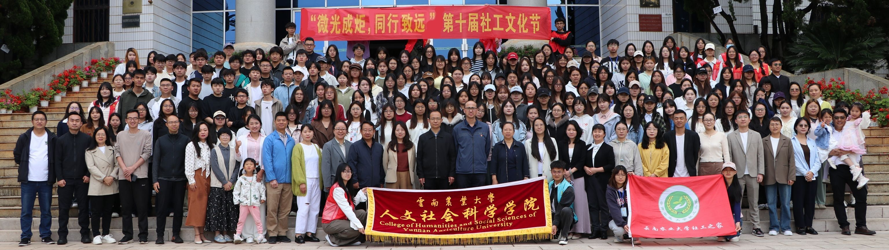
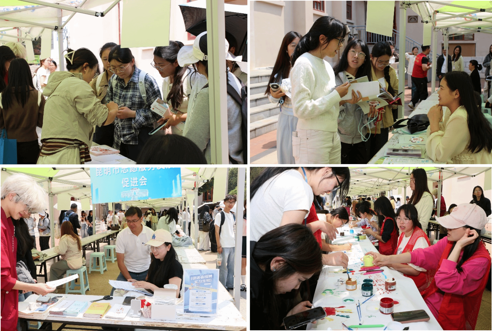
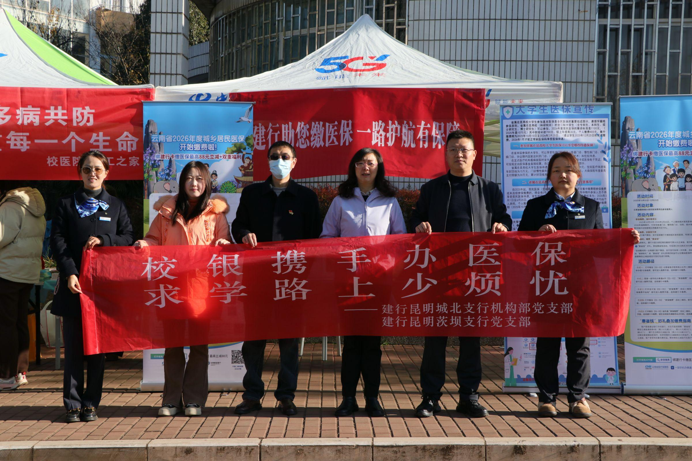
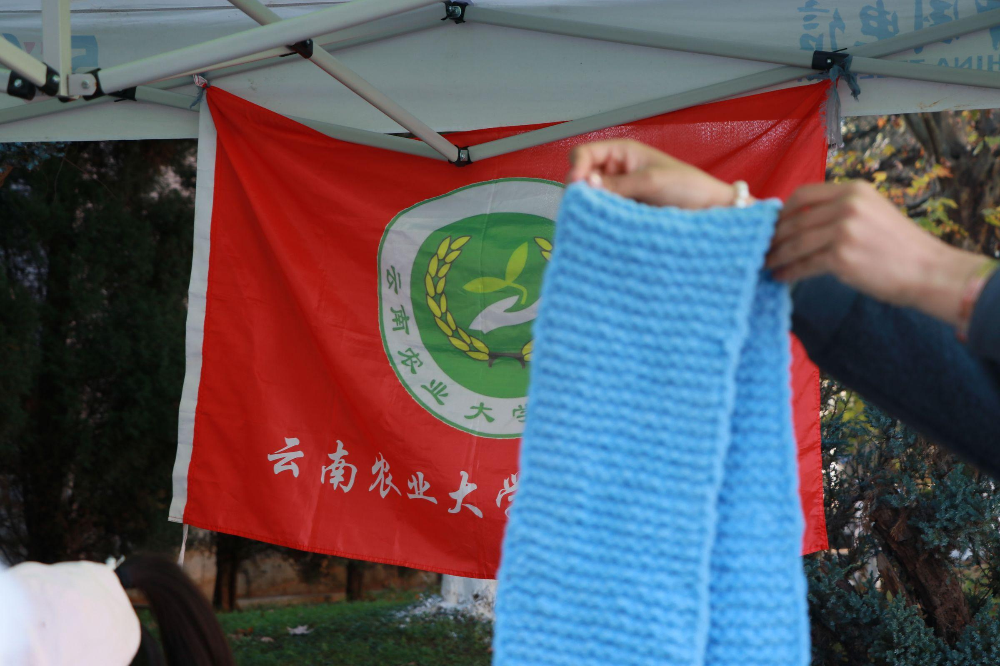
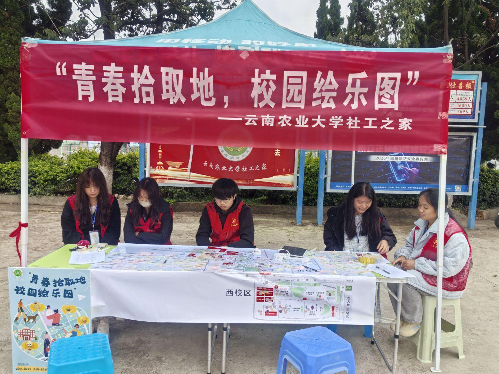
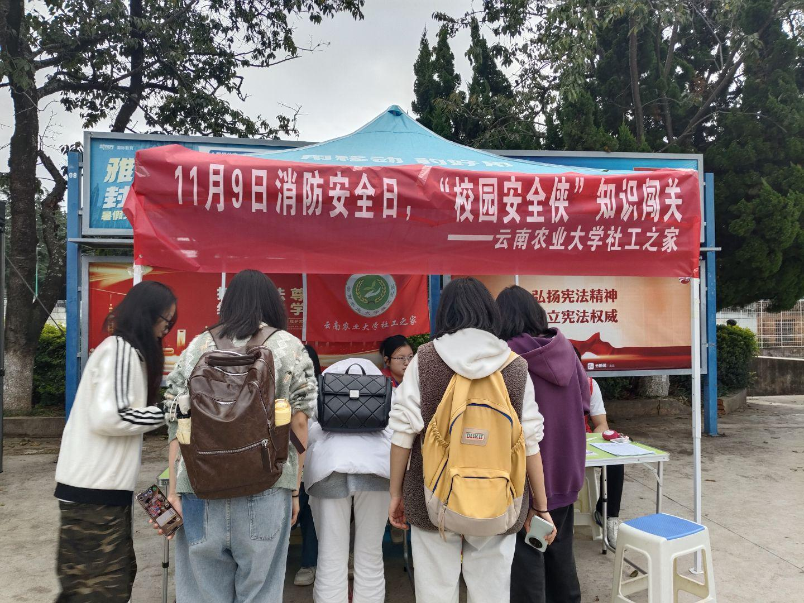
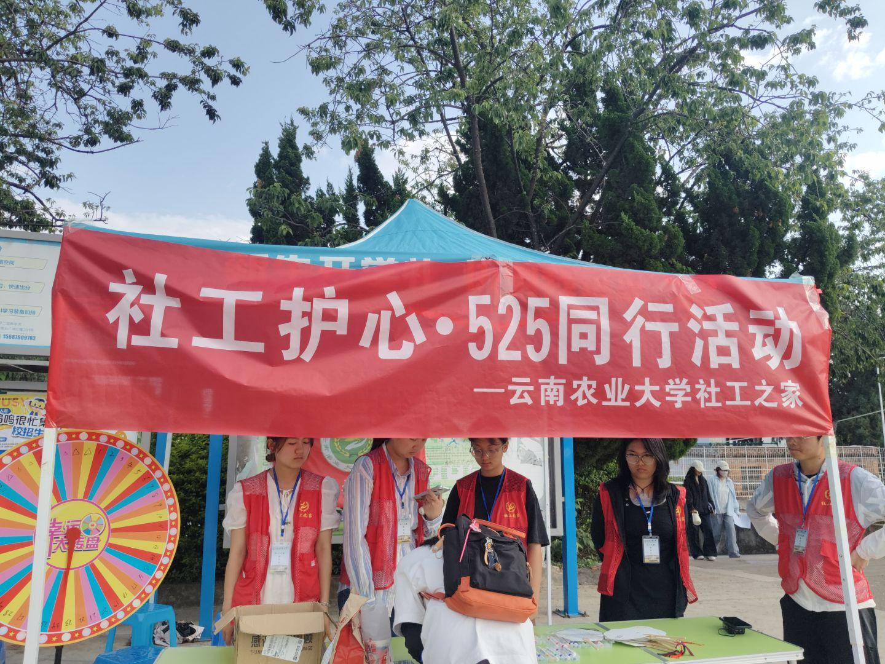

社工书屋
管理图书及借阅，主办读书会、社会工作专业讲座等活动，宣传社会工作专业理念。

向下浏览社工之家成立于2004年，是隶属于云南农业大学的志愿服务性学生社团，以社会工作专业理念“助人自助，服务社会”为宗旨，长期组织成员开展服务学习与各类社会实践活动，着力培育青年学生的社会责任感与无私奉献精神。
社团历经22届社员接续奋斗，围绕高质量志愿公益社团建设深耕实干、推进品牌建设。自2018年起连续七年获评云南农业大学“十佳社团”，斩获全国高校百强社团等多项荣誉，形成禁毒防艾宣教、滇池生态守护、校园社工心理服务等特色。
未来，社团将继续坚守社工初心与公益使命，拓宽校地合作实践渠道，丰富志愿服务项目内容，以专业力量践行社会责任，打造更具影响力与温度的高校志愿服务品牌社团。
从策划到记录，从宣传到陪伴，六个部门让一份善意有序抵达。
管理图书及借阅，主办读书会、社会工作专业讲座等活动，宣传社会工作专业理念。
负责课余体育活动等工作的计划和实施，协助相关部门组织活动。
撰写活动策划，组织开展各项活动。
负责日常接待、社员登记、社团注册、档案账目及活动资料整理，撰写会议记录。
负责社团形象设计和校内外宣传，制作海报展板及活动宣传材料，及时报送活动总结。
负责成员纪律监督，安排活动人员及活动出勤检查。
文化节、志愿服务、陪伴与成长，都是社工之家共同写下的日常。

以“微光成炬·同行致远”为主题，包含开幕式、校友分享、实务竞赛颁奖、机构招聘及互动体验市集等环节，展示专业建设成果，深化校社合作，搭建实习就业平台，助力学子扎根基层。
查看新闻
联合校医院及社区开展防艾科普，通过防艾飞行棋、手绘创作、知识竞赛及咨询检测等趣味互动形式，普及艾滋病及多病共防知识，提升师生自我保护意识，营造消除偏见、尊重生命的校园氛围。

联合六家社团开展围巾收集活动，将学子亲手编织的围巾寄往西南山区送给留守儿童，为山区儿童送去冬日温暖，强化大学生社会责任感，践行“奉献、友爱、互助、进步”的志愿精神。

设置情绪贴纸墙与悦事分享板块。同学们可粘贴快乐贴纸、书写暖心校园小事，抒发情绪、分享美好，留存青春温暖回忆。

在11月9日消防安全日设置消防器材识别、器材用途配对趣味关卡，让学生主动学习消防知识，掌握应急技能，争做校园安全宣传员，共建平安校园。

5·25心理健康日，转动微习惯转盘完成简易治愈小事，手绘折扇抒发情绪，以轻松形式引导同学们接纳自我、舒缓压力，学会日常自我关怀。
全国百强学生社团、云南省优秀志愿服务团队、校十佳社团等荣誉，记录着一代代社工人的坚持与热爱。